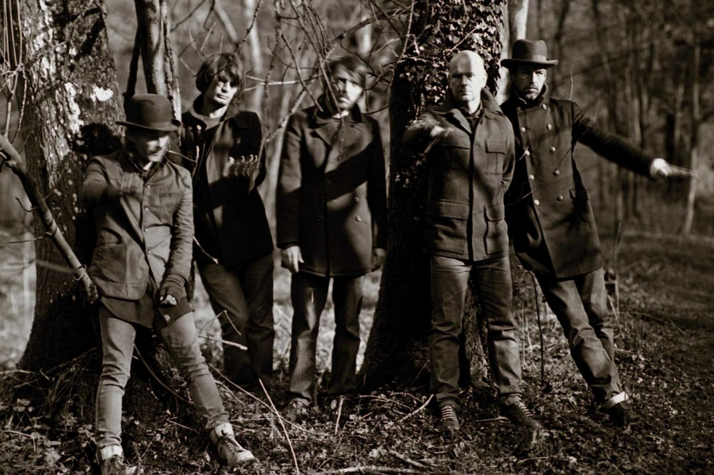

| Radiohead return with new single Burn The Witch 4 May 2016 |
|  |
After a whirlwind of noise from everybody but the band, Radiohead have broken the silence with the brand new single Burn The Witch, an expected departure into unexpected territory. As the first studio offering since last year’s Spectre and 2011’s ‘The King Of Limbs’, Burn The Witch exudes a refreshing feeling of effortlessness wrapped in the self confidence of a band still hitting their stride. The minimal orchestral arrangement is juxtaposed by the rest of the band, as the fuzzed out bass lines and electronic elements all snap together like a puzzle, creating a song managing to marry contrasting ideas - the old with the new, and the upbeat with the melancholy - that build up to a discordant end. Radiohead's ninth album is expected to be released at any moment in the near future. |